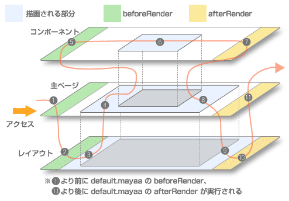

Documentation
3-2. 描画前後のスクリプト
 レンダリング前にスクリプトを実行する
レンダリング前にスクリプトを実行する
レンダリングのための準備処理をしたい場合、beforeRender タグを使うことで、ページのレンダリング処理を開始する前に任意のスクリプトを実行できます。beforeRender タグのボディにスクリプトをそのまま書いてください。基本的に beforeRender は、request 内の値を別変数に入れ直すときなどに使います。
次の例では beforeRender で定義した変数を write プロセッサで出力します。
before_render.html<html> <body> <span id="past">dummy past time</span> </body> </html>before_render.mayaa<?xml version="1.0" encoding="ISO-8859-1"?> <m:mayaa xmlns:m="http://mayaa.seasar.org"> <m:beforeRender> var cal = java.util.Calendar.getInstance(); cal.set(java.util.Calendar.YEAR, 2000); var date = cal.getTime(); </m:beforeRender> <m:write id="past" value="${ date }" /> </m:mayaa>
ブラウザで http://localhost:8080/mayaa/before_render.html にアクセスしてみましょう。
実行結果 (改行などは実際の実行結果と異なります)<html> <body> Thu Oct 20 21:02:03 JST 2000 </body> </html>
実行結果は、beforeRender で準備した変数 date の値が表示されています。変数 date には、現在時刻の年を 2000 にしたものがに入ります。
また不等号など XML として意味のある文字を使う場合は、beforeRender のボディを CDATA 宣言するとエスケープする必要がなくなります。
<m:beforeRender><[!CDATA[
var sum = 0;
for (var i = 0; i < 10; i++) {
sum += i;
}
]]></m:beforeRender>
<m:write id="result" value="${ sum }" />
レンダリング後にスクリプトを実行する
ページのレンダリング処理が終了した後に任意のスクリプトを実行できます。afterRender プロセッサを使い、ボディにスクリプトをそのまま書いてください。beforeRender と同じく、CDATA 宣言すると不等号などをエスケープする必要がなくなります。
たとえばレンダリング処理が終わった後にログを出力する場合、次のように書くことで実現できます。
<m:afterRender>
Packages.org.example.Logger.log("rendered.");
</m:afterRender>
レンダリング処理の後に何かをするという場面は多くないでしょうから、afterRender を使う場面は少ないでしょう。描画のための一時リソースを開放する処理など、特殊な処理が必要な場合に afterRender を使ってください。
コンポーネントやレイアウトを使う場合の実行順
コンポーネントやレイアウト、さらには default.mayaa でも beforeRender と afterRender を使うことができます。これらを組み合わせて使うには、どういう順番で実行されるかを意識する必要があります。
全体の設定である default.mayaa に書いた beforeRender は、他のすべての beforeRender よりも先に実行されます。そして default.mayaa の afterRender は他のすべての afterRender よりも後に実行されます。
次にリクエストされたページの beforeRender が実行され、レイアウトを使っていればその次にレイアウトページの beforeRender が実行されます。全体の描画が終わったあと、レイアウトページの afterRender、リクエストされたページの afterRender が実行されます。
コンポーネントの beforeRender はそのコンポーネントを処理する直前に処理されます。その後にコンポーネントがレンダリングされて afterRender が処理された後、コンポーネントを使うページのレンダリングに戻ります。ひとつのコンポーネントページに複数のコンポーネントを定義している場合、そのひとつひとつに同じ beforeRender、afterRender が定義されていると考えてください。
■実行順イメージ
実行順のイメージを図 3-2-1 に示します。これはメインのページからコンポーネントをひとつとレイアウトを使っている単純な例です。流れを矢印で示し、何らかの処理が行われる部分を順番に数字で示しています。

レイアウトの上でコンポーネントを使う場合やコンポーネントの上でコンポーネントを使う場合も、リクエストされたページの上でコンポーネントを使う場合と同様です。コンポーネントを描画する直前に beforeRender が実行され、コンポーネントの描画が終わった後で afterRender が実行されます。